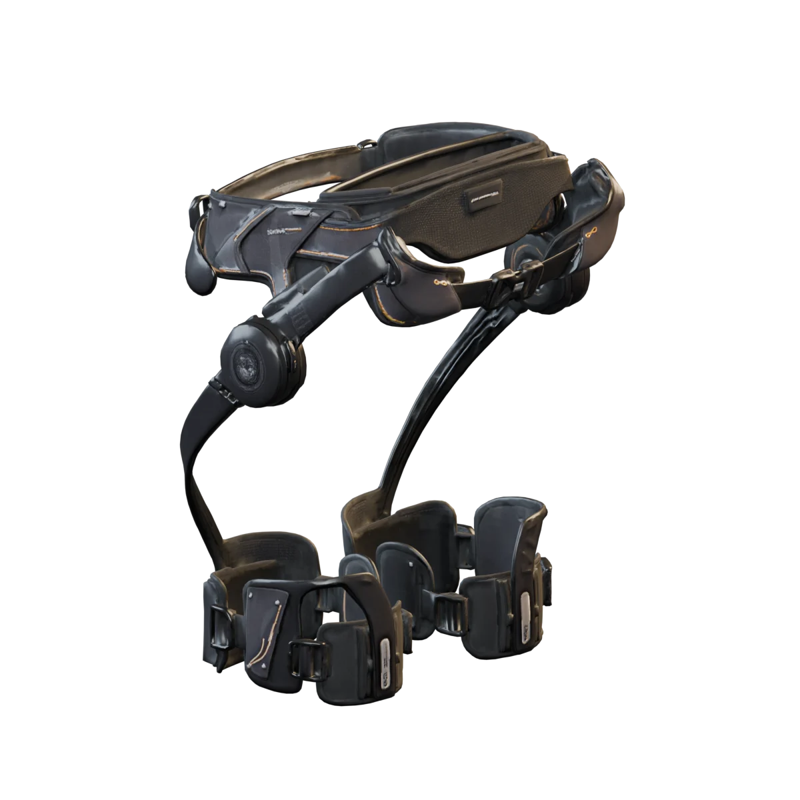
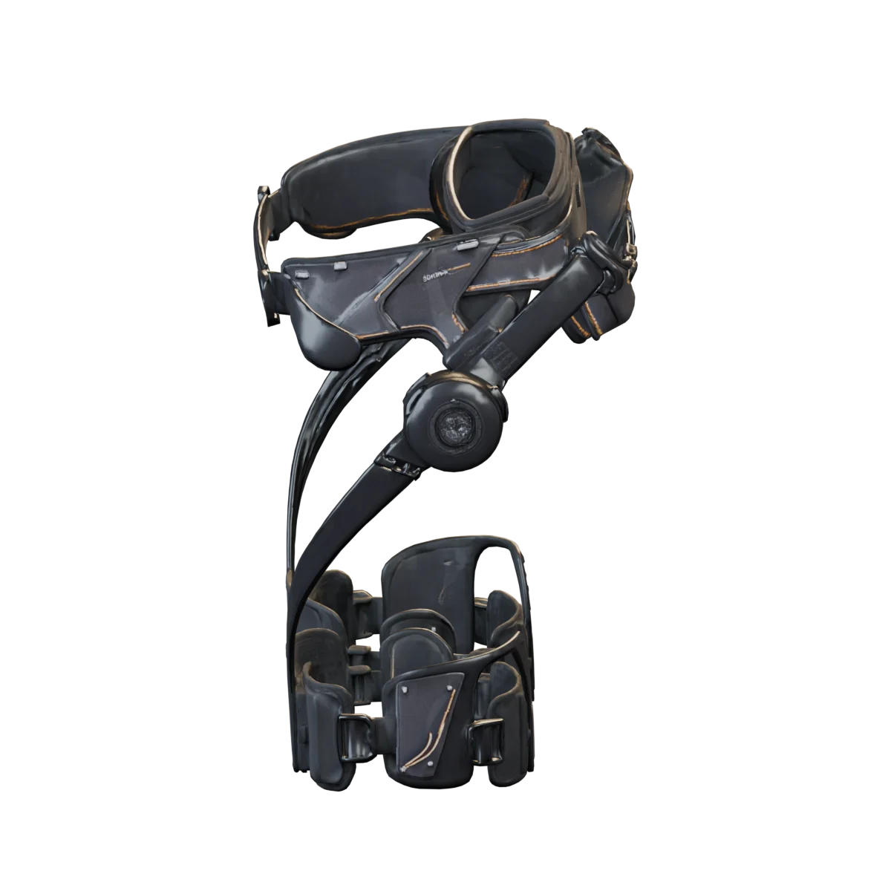
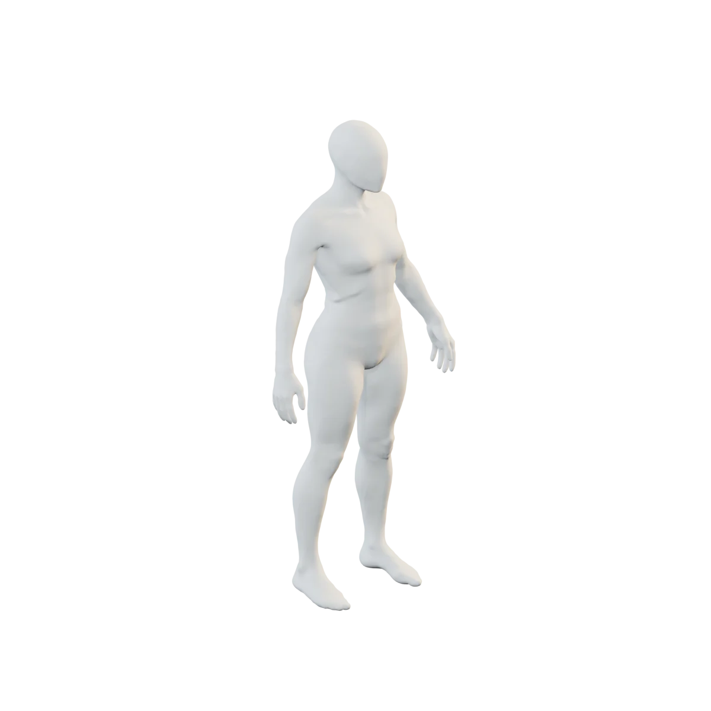
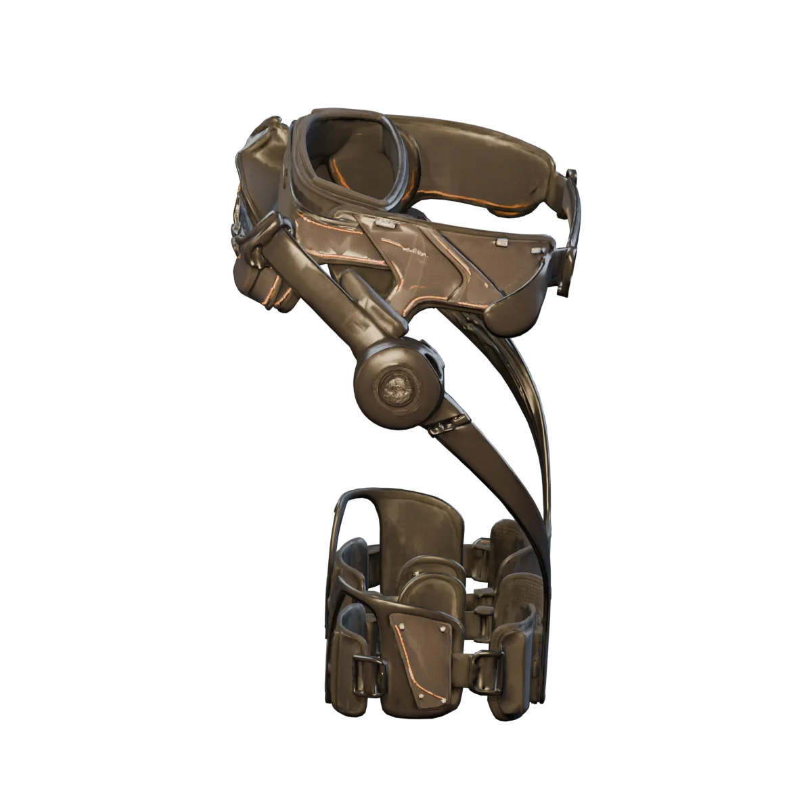

01 / REFLEX
反射
FLY-REFLEX
每一帧都在检查运动边界。异常出现时，由确定性规则立即减弱输出或急停。
180 Hz安全边界
Ghost 将实时感知、策略判断与经验记忆接入 Hypershell X Max S。 从下方入口直接查看 3D、产品工作区和独立演示。

选择一个入口。实时画面依赖设备连接；仿真和历史回放可以独立查看。
从结构细节到贴身形态，近距离观察每一处设计。向下拖动模型，换个角度继续探索。



03 / 3D MODEL旋转查看外骨骼与人体 ↗转动模型，观察外骨骼的结构。连接时查看双髋实时姿态和数据；也可以切换到桌面实测记录。

顺着髋关节运动提供轻量辅助。首次启动采用 0.1 增益、0.5 N·m 上限。
运动时施加轻量阻力。首次启动采用 0.3 增益、0.5 N·m 上限。
实时姿态来自设备；历史回放来自桌面标定记录。白膜屈膝是视觉估算。
这里展示的是项目自制的外骨骼与白膜人体 3D 模型，外观为视觉近似，不是设备工程模型或真人扫描。双侧绑腿下缘与白膜膝关节之间留出约两指的距离，腰部和腿部固定件贴近人体外形；这只是视觉位置，不代表真实穿戴尺寸。实时视图读取本机设备服务，以首次有效角度对齐模型，也可手动重新对齐；腰部传感器检测到转向时，模型可跟随转身。双髋角度驱动腿部，白膜的屈膝由髋角和角速度估算，设备没有测量膝角；持续交替摆动时显示状态，此状态不代表已测得脚步或行走距离。离线时停止更新姿态。历史数据来自真实设备的桌面标定记录。运动模式仅在真机来源、安全档和实时状态确认后手动开启；模型姿态本身不用于设备运动控制。
让不同速度的判断，各司其职。从毫秒级保护，到策略选择，再到经验积累。
FLY-REFLEX
每一帧都在检查运动边界。异常出现时，由确定性规则立即减弱输出或急停。
JEV-DECIDE
观察一段运动窗口，判断当前适合的策略；信心不够时，保持现状。
EVOMAP-GENES
遇到问题时检索验证过的处置经验，让每一次排查都能成为下一次的线索。
在本机产品工作区里，把设备监看、运动模式和个人记录连成完整体验。
串口自动发现与重连；设备就绪后恢复数据展示。助力、阻尼与保持策略始终经过斜坡、限幅和急停保护。
查看设备的实时角度与指令力矩。助力、锻炼预设由你手动选择，设备就绪后才可开始。
收录设备记录，回看有效活动时间、双侧幅度与指令做功估计。桌面调试与穿戴运动分别标识，重复记录不会重复累积。
把偏好、使用感受和每次参数调整保存在本机。历史版本随时可查，个人档案可以导出，保存参数不会自动施力。
从第一步、三日同行，到一小时积累、左右同行。四枚徽章只依据完整真实穿戴活动计算，桌面、仿真与静止记录不计进度。
产品工作区在本机运行，默认只读查看。此页 3D 区域提供动力辅助和健身阻力的手动入口，仅在真机来源、设备状态及安全档确认后开放；个人档案仍留在本机产品工作区。
查看产品代码串口会中断，传感器会失联，判断也可能不确定。因此系统保留设备状态、指令来源与安全边界，让每次行动都有迹可循。
四个独立开源模块与外骨骼主项目共同组成 Ghost。查看代码、复现实验，或沿着自己的方向继续构建。